Settings discoverability
Users needed a clearer and more organized way to find account and product controls.
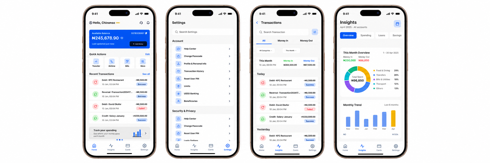
Independent Redesign · Concept Project 2026
Making everyday business banking simpler, faster, and more actionable for Nigerian merchants.
A research-driven redesign focused on reducing cognitive load, improving financial visibility, and making frequently used banking actions easier to discover.
Note: This is an independent design and nit affiliated to the moniepoint officiaL.
Project Overview
The redesign started with a real user survey rather than immediately jumping into UI design. The existing experience contains powerful financial functionality, but users can struggle to quickly locate important information and settings.
The redesign explored how the product could better support merchants and everyday business users who need to understand their money and complete important actions quickly.
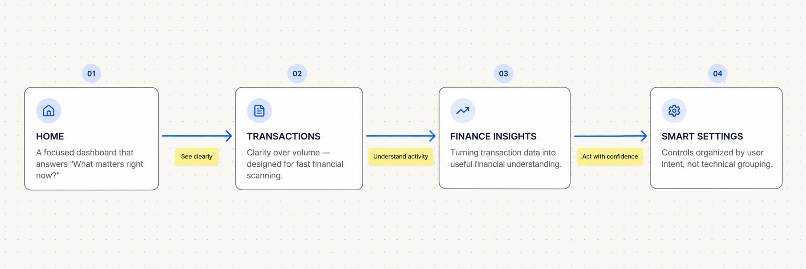
The Research
The redesign began with a real-user survey involving 18 participants, focused on understanding how merchants and business users interact with their banking product every day.
To understand where the existing experience was falling short, I combined direct user feedback with a structured review of the product and its competitive landscape.
I surveyed 18 participants to understand how they use mobile banking apps, the challenges they face, and what they expect from a better financial experience.
I evaluated the existing Moniepoint app to identify usability issues, inconsistent interactions, unclear information hierarchy, and areas causing unnecessary friction.
I studied leading Nigerian fintech products to understand common interaction patterns, industry expectations, strengths, and opportunities for differentiation.
I organized the research findings into recurring behavioural patterns, user expectations, and usability concerns to uncover the most important themes.
The identified themes were translated into actionable insights and prioritized based on their frequency, severity, and impact on the overall user experience.
These insights informed a clear design direction: simplify navigation, improve financial visibility, reduce cognitive load, and help users complete essential tasks with greater confidence.
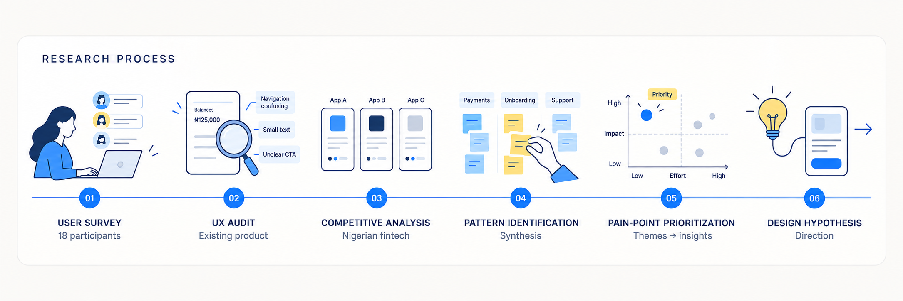
Six recurring themes emerged from the survey synthesis, each pointing to a specific area of friction.
Users needed a clearer and more organized way to find account and product controls.
Too much information competing for attention made it harder to identify what mattered immediately.
Users needed faster access to transaction information and better visibility into their financial activity.
There was an opportunity to turn transaction data into useful financial understanding.
There was an opportunity to turn transaction data into useful financial understanding.
Important actions should require fewer steps and less searching.
Typography, contrast, hierarchy, and information density needed to support quick scanning.
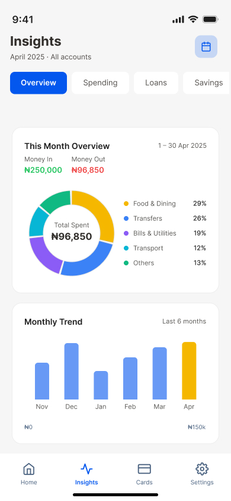
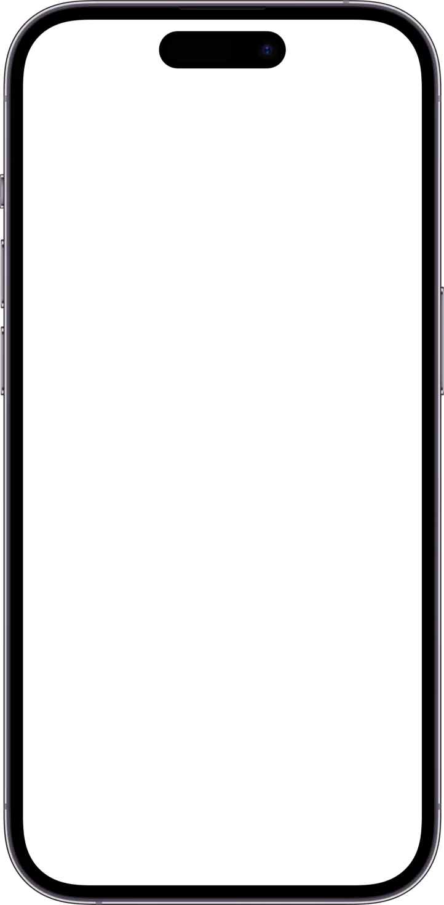
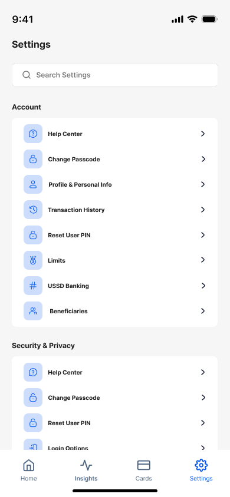
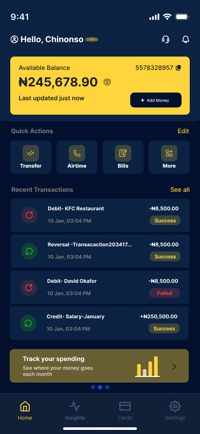
The redesigned experience helps users move naturally from finding what they need to feeling fully in control of their finances. Users can quickly discover important features and settings, understand where their money is going through clearer transaction information and spending insights, complete essential banking actions without unnecessary steps, and manage their account, security, and product preferences with confidence.
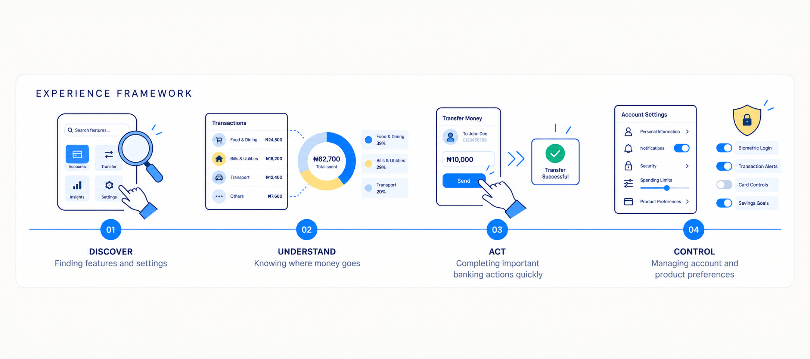
The problem
Moniepoint gives users a lot of information. The challenge is helping them understand what matters first. Users need to manage money quickly, but when important financial information, transactions, and controls compete for attention, the experience creates unnecessary cognitive load. The redesign focused on prioritization, discoverability, and actionable financial information.
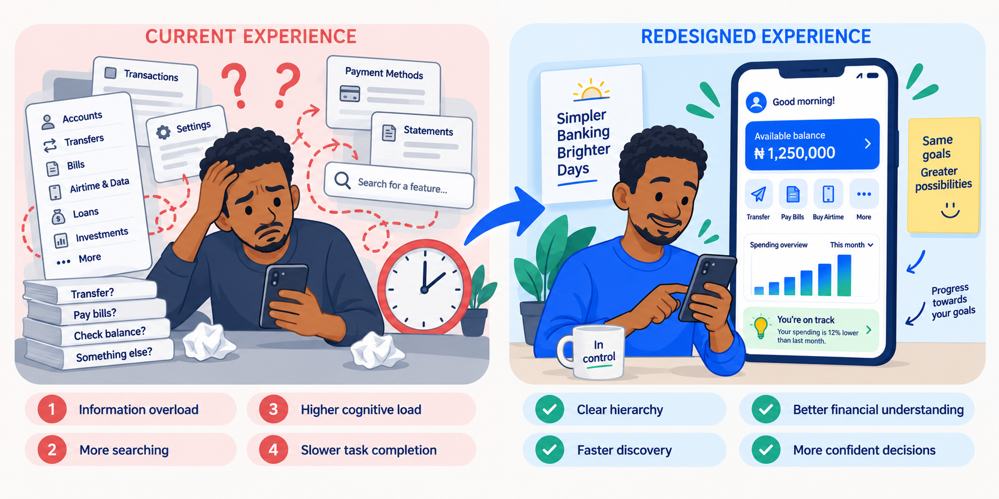
Design goals
The redesign focused on making the banking experience simpler, clearer, and easier to navigate. I reduced unnecessary visual and cognitive complexity, made important features and settings easier to discover, and transformed raw transaction data into useful financial insights. I also improved access to frequently used actions so users could complete important banking tasks faster and with less effort.
The goal was not to redesign every screen. Instead, I focused on the moments that created the most friction and had the greatest impact on the overall user experience.
The problem
Each design decision is directly connected to a user signal from the research. No feature was added without a corresponding user need.
| User signal | Design opportunity | Product decision |
|---|---|---|
| Dashboard feels crowded | Improve visual hierarchy | Create a more focused Home experience |
| Users need faster transaction access | Improve information architecture | Make Transactions easier to reach and scan |
| Users want better spending visibility | Convert data into understandable insights | Introduce Finance Insights |
| Settings difficult to discover | Improve organization and discoverability | Introduce Smart Settings structure |
| Navigation needs to feel faster | Reduce unnecessary interaction steps | Prioritize frequent actions |
| Readability matters | Improve visual hierarchy | Use stronger typography, spacing, and contrast |
The architecture was designed to reflect how users think about their banking — not how the feature set was originally organized.
User flow
Wireframing
Wireframes were used to validate hierarchy, content prioritization, navigation, and interaction structure before any visual refinement. The goal was to get the skeleton right before committing to aesthetics.
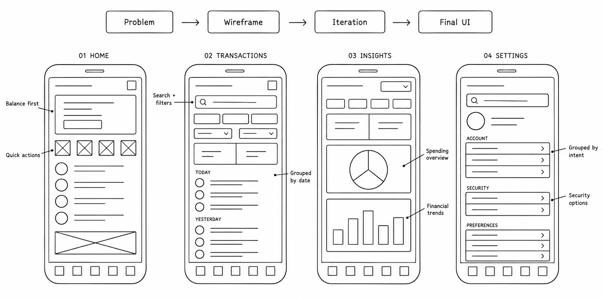
Component states
Components were designed with consistent states and behaviors so they could scale across the entire product , not just the screens in this redesign.
In formation was passed in:
Home Redesign
The redesigned home screen intentionally reduces competing visual elements. The hierarchy prioritizes:
Balance → Actions → Activity → Insights.
The redesigned home screen focuses on the information merchants need most throughout their day. The account balance appears first because it is often the first thing they check each morning. Frequently used actions such as transfers, airtime purchases, and bill payments remain accessible in one tap. Recent transactions provide a quick view of the day’s business activity, while a financial snapshot helps merchants understand their spending without leaving the home screen.
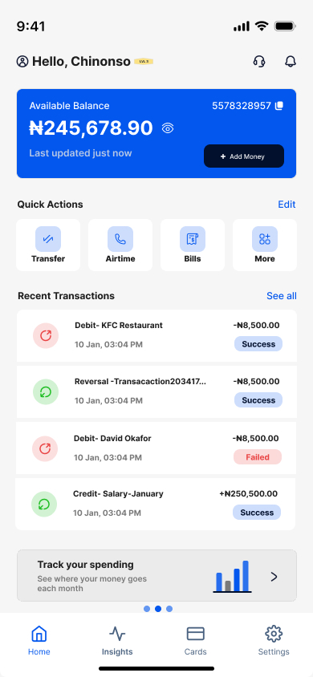
Transactions Redesign
The redesigned transactions view helps users instantly answer: what happened, when it happened, how much, and what the status is. Clear grouping and strong hierarchy replace dense, hard-to-scan lists.
Before
Dense information, harder scanning, no visual hierarchy between amount, status, and context.
After
Clear grouping, stronger hierarchy, faster scanning, category context, status indicators.
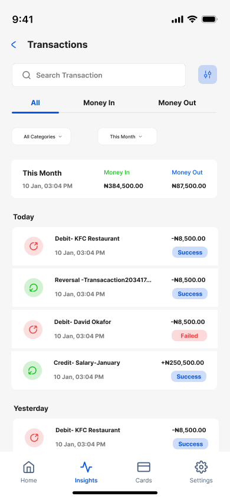
Smart Settings
Instead of a long technical list, settings are organized by user intent.
Account, Security & Privacy, and more. Each category answers a clear question, making it easy to find exactly what you need without hunting through a flat list.
The redesigned home screen focuses on the information merchants need most throughout their day. The account balance appears first because it is often the first thing they check each morning. Frequently used actions such as transfers, airtime purchases, and bill payments remain accessible in one tap. Recent transactions provide a quick view of the day’s business activity, while a financial snapshot helps merchants understand their spending without leaving the home screen.
Finance Insights
Raw transaction history tells users what happened. Finance Insights helps users understand patterns so a merchant can see not just that Money left their account at a certain period, but where it went and why. A dedicated Loans tab was added to surface credit access at the moment users are already thinking about their money.
Daily Cash Flow, Business Spending, Income Tracking are all in finance insights
Product decision — Loans tab
Loans Access
Surfacing credit at the right moment
User research showed merchants often need short-term liquidity between payments. Placing Loans inside Insights, where users already review their cash flow, means the feature appears when the need is most salient.
AI + Product Design
Generative AI was used during the brainstorming phase to accelerate ideas around dashboard metrics, Finance Insights, and Smart Settings. The raw AI output initially introduced excessive complexity and enterprise-oriented functionality that didn't align with Moniepoint's target users.
The AI was guided with specific constraints: Nigerian fintech, local merchants, everyday cash flow, fast transactions, simple financial visibility, and practical settings.
The value of this redesign is in the quality of the decisions, the clarity of the product, and the rigor of the process.
The redesign began with a real-user survey involving 18 participants. Direct feedback, a UX audit, and competitive analysis informed which problems to prioritize.
The goal was not to redesign every screen. Instead, I focused on the moments that created the most friction and had the greatest impact on the overall user experience.
Dynamic states, clear interaction logic, and reusable components help communicate product behavior and edge cases during handoff.
More examples of design that drives results.

Aierth Technologies
I worked across the brand and digital product experience, translating Aierth's business vision into a visual identity, website experience, marketing ecosystem, and scalable design language.
Read case study
CapturePRO demonstrates how a specialised e-commerce store can make technical products feel easier to understand and more enjoyable to explore.
Read case study